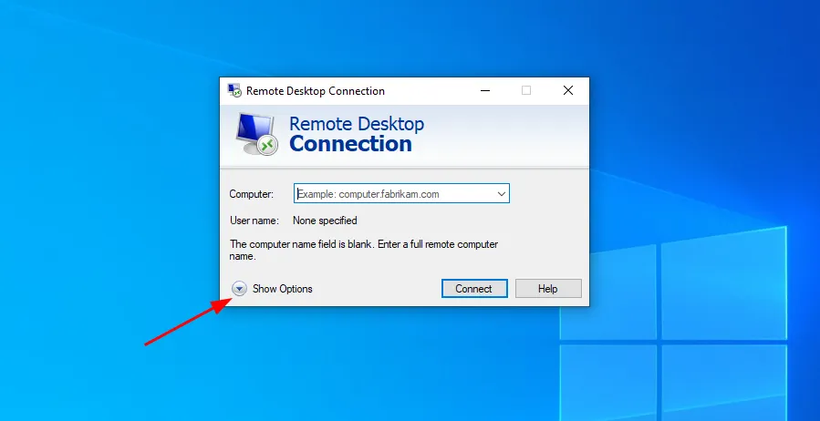
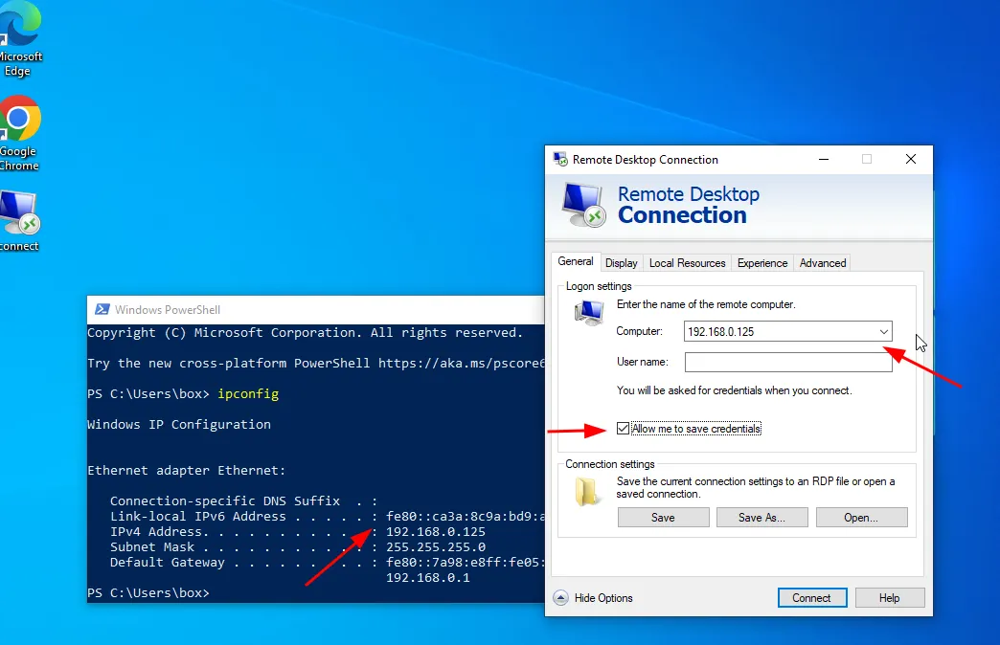
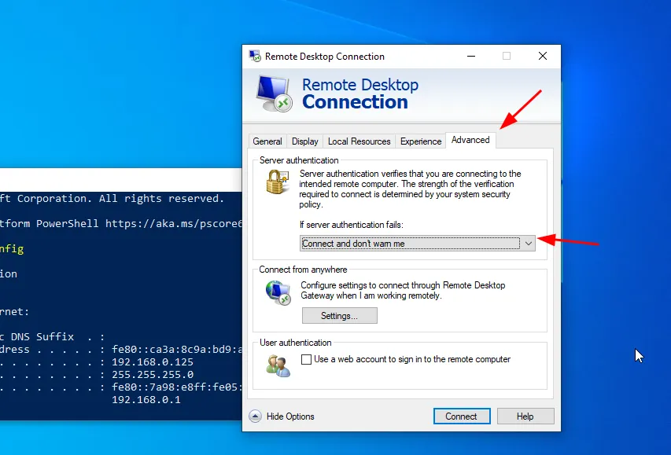
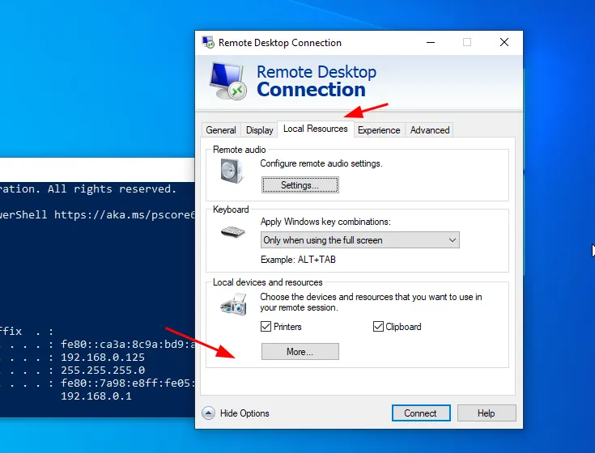
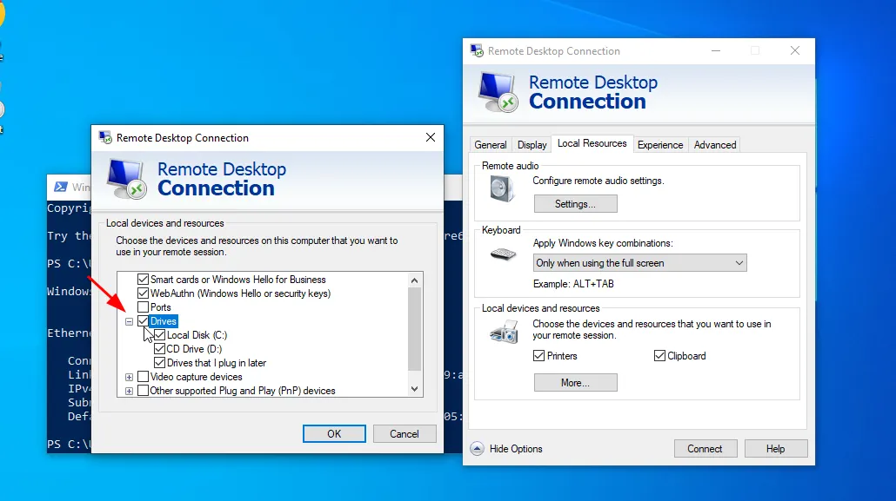
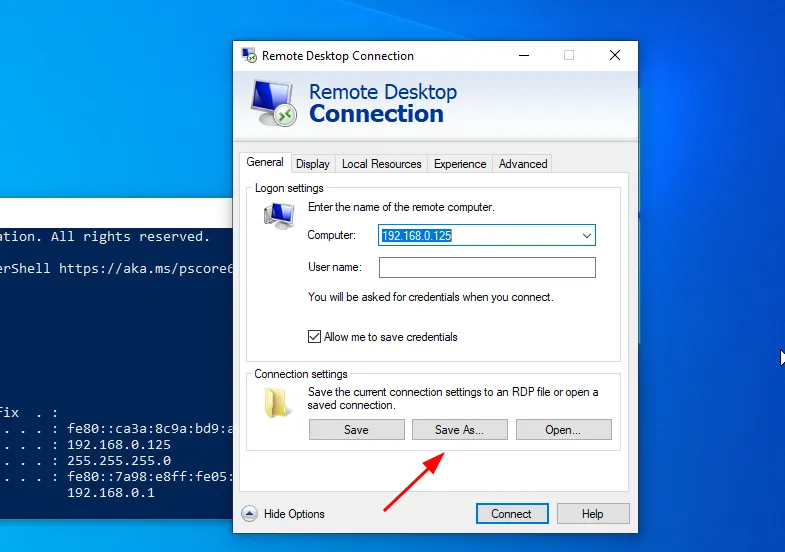
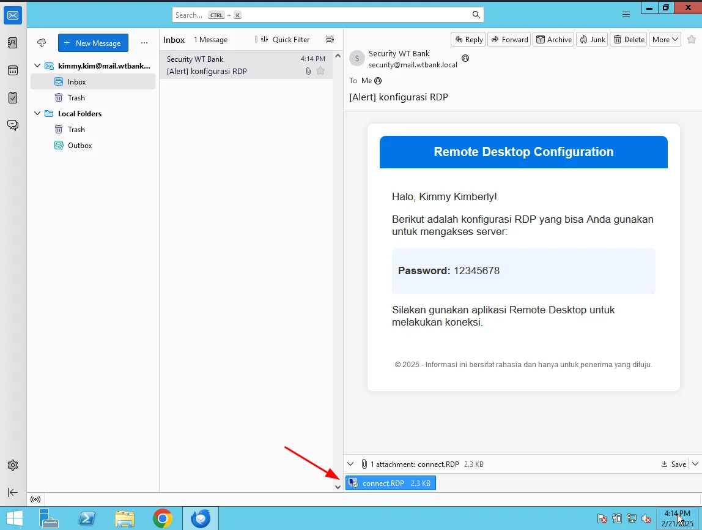
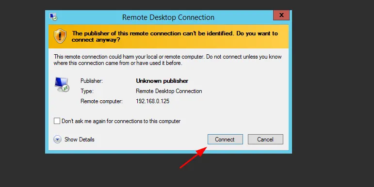
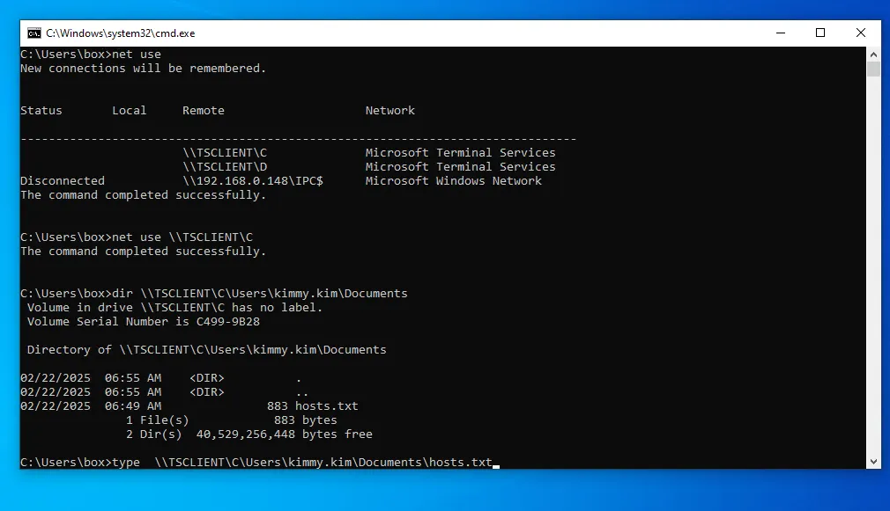
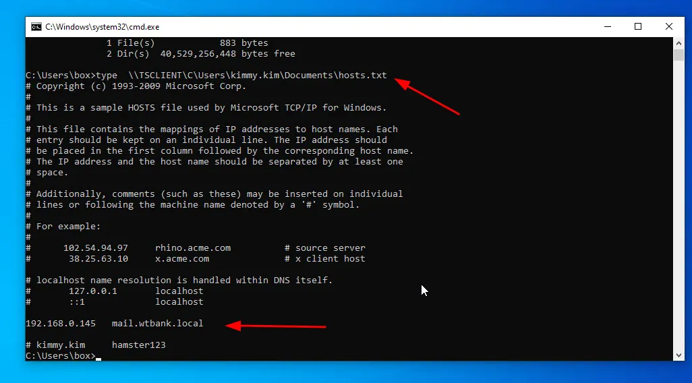

Rogue RDP via Spear Phishing: Initial Access Tactic
When I just woke up in the morning today, I immediately made coffee and while scrolling twitter (X) in the hope of getting inspiration or resources shared by people on twitter, about 15–20 minutes I scrolled, I found a post that shared an article from Black Hill InfoSec which discussed rogue rdp, After opening and reading the article I tried to apply it to my active directory infrastructure, where I have 2 domains, namely child (DC02) and parrent (DC01) and one windows server (EMP-Mechine) that joins the child domain (DC02), I tried this attack for Windows Server (EMP-Mechine) for initial access.
Whats is RDP?
RDP (Remote Desktop Protocol) is a service in computer networks that allows users to access other computers over the network. By default, RDP runs on port 3389 and is commonly found on Windows networks, although in some cases, RDP is also used on Linux-although quite rarely.
What is Rogue RDP?
Rogue RDP is a technique where an attacker creates an .rdp file with a configuration that allows (or forces) the client to share disks, such as C:// and D://. This allows the attacker to steal files from the client’s disk as well as embed malicious applications by uploading them to the Startup directory, so that they run automatically when the system starts up.
You can create this .rdp file using the built-in Remote Desktop Connection software from Windows, you can follow these steps to create a rogue rdp.
 Click the show options section
 Navigate to the IP that will be the rogue RDP and checklist the Allow me to save credentials section.
 Select the Advanced Menu then change “if server authentucation fails:” to be as shown in this image
 Select “Load Resource” and then select “More”
 Select drives and checklist all
 Save the configuration file and you have created a rogue rdp file ready to be used for spear phishing.
To make the scheme more realistic, I have tried sending the .rdp file to the target email “EMP-Mechine” at kimmy.kim@mail.wtbank.local.
 Then when kimmy downloaded the rdp file and then connected to the RDP, he unknowingly shared his C drive access.
 Connect
 You can see here that the box account can access the C drive of the user kimmy and not only access the box account (rdp host) can also upload malware and place it in the startup application.
 Quite simple but dangerous, maybe this is all the discussion about rogue rdp, keep in mind that the article I made only focuses on practice rather than theory, because you can get the theory in articles on the internet, thank you for reading until the end.